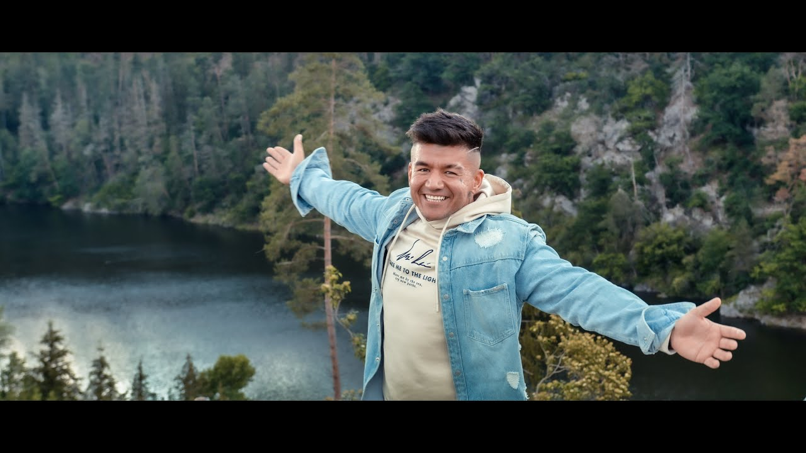

(Refrén)
Ať si každý co chce říká,
tohle je ten domov náš,
od Aše až do Těšína,
tady svoje místo máš,
možná už to nevnímáš,
a všechno zdá se ti stejný,
tak otevři oči svý,
všude dobře doma nejlíp.
Chtěl jsem tě do Paříže vzít,
na fotku do Disneylandu,
tančit noční Vídní,
potom sachr snídat venku.
Přál jsem si ukázat ti v Anglii ulici muzeí,
a v Louvre ztratit se na hodiny v lásce k umění.
Měli jsme stíhat na Islandu, západy slunce,
měla si v Kodani pobíhat v mojí bundě,
tančit v Amsterdamu, v Berlíně projet kina,
ve Frankfurtu kupovat (??) co na nás zbyla.
Dochází mi, v jaký žijem krásný zemi,
když vidím na story s páry u lomu z Ameriky,
a tak si říkám, jestli máme na to právo,
přehlížet ty krásy a nadávat na náš národ.
Když vidím rodiny po spolu u Ještědu,
vím že krom Pradědu je to ten nejlepší, z pohledů.
Chci zase jet na Konopiště, vidět Nový Jičín,
Máchovo jezero a Krkonoše tam se těším.
(Refrén)
Ať si každý co chce říká,
tohle je ten domov náš,
od Aše až do Těšína,
tady svoje místo máš,
možná už to nevnímáš,
a všechno zdá se ti stejný,
tak otevři oči svý,
všude dobře doma nejlíp.
Tolik krásnejch míst, od Opavy až do Zlína,
divadlo u Krumlova, Kutná hora, vodárny u Kolína.
Tohle je ráj, Český ráj milujem Chalupy,
sleduju tu krásnu, když jedu vlakem na Kralupy.
Co si dát festival Netflixu na hotelu ve Varech,
a projít se po Stodolní v Ostravě po barech.
Co takhle zastavit u Jihlavy na noční jízdu,
na cestě na Pálavu, pak do vinnýho sklípku.
Co třeba dát si víno, srazy v Brně U Rytíře,
pak zapít ten výlet v Plzni, jejich elixírem.
Doufám, že z Prahy bude do Budějic dálnice,
táhne mě to na jih, bejt u Třeboně stálice.
Ten krásnej zvuk, když v noci Boubín slyším,
přejdu jakoukoliv horu ve směru k Domažlicím.
Olomouc, Kladno, Teplice, Most, Strakonice,
Hradec a Pardubice hodně měst a jedno srdce.
(Refrén)
Ať si každý co chce říká,
tohle je ten domov náš,
od Aše až do Těšína,
tady svoje místo máš,
možná už to nevnímáš,
a všechno zdá se ti stejný,
tak otevři oči svý,
všude dobře doma nejlíp.
Kdykoliv přistávám a procházím tím terminálem,
zjišťuji že něco mý srdce k tomu místu táhne,
toulám se životem a vnímám jeho slasti,
že je o dost lepší, když jsi doma ve svý vlasti.
Ústí, Hradiště, Přerov, (??), Telč a Frýdek,
Bruntál, Svitavy, Polička, Radiměř a Písek.
Blansko, Valmez, Česká Lípa, Boskovice,
Havířov, Třinec, Kuřim,
Tábor a Strakonice.
(Refrén)
Ať si každý co chce říká,
tohle je ten domov náš,
od Aše až do Těšína,
tady svoje místo máš.
Ať si každý co chce říká,
tohle je ten domov náš,
od Aše až do Těšína,
tady svoje místo máš.
Možná už to nevnímáš,
a všechno zdá se ti stejný,
tak otevři oči svý,
všude dobře doma nejlíp.
Predošlá Stránka